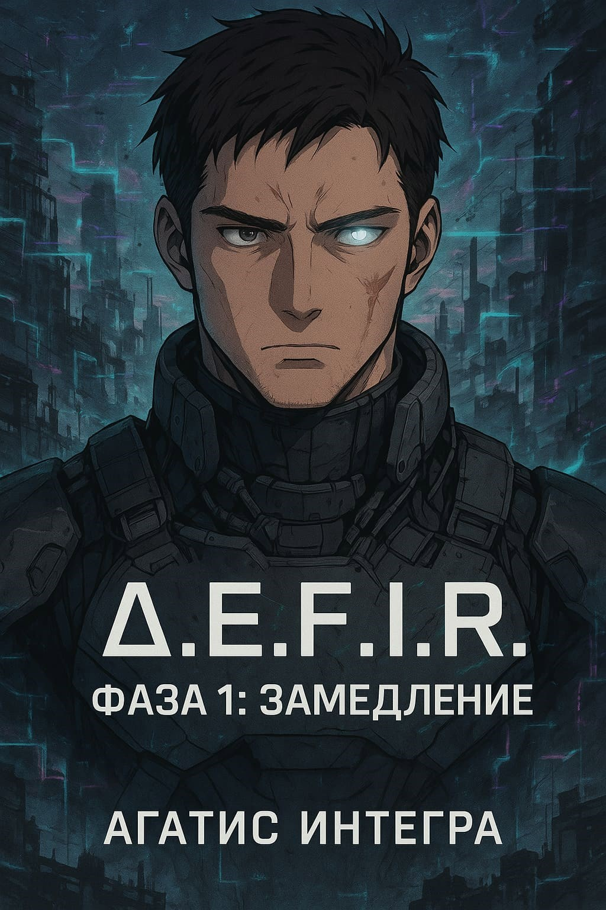

Фаза первая

Δ.E.F.I.R. — Phase 01
Замедление
Мир на грани разрыва. Δ.E.F.I.R — таинственный феномен, вторгшийся в реальность, изменяет саму ткань мира.
Алекс, бывший элитный боец, теперь — беглец. Он просто хотел выжить. Но Эфир уже выбрал его.
объём703 577 знаков
статусзавершено
а.л.17,59
форматроман
🔻 Добро пожаловать в первую фазу эксперимента.Читать на author.today
⏳ Симуляция активна. Глюки неизбежны.